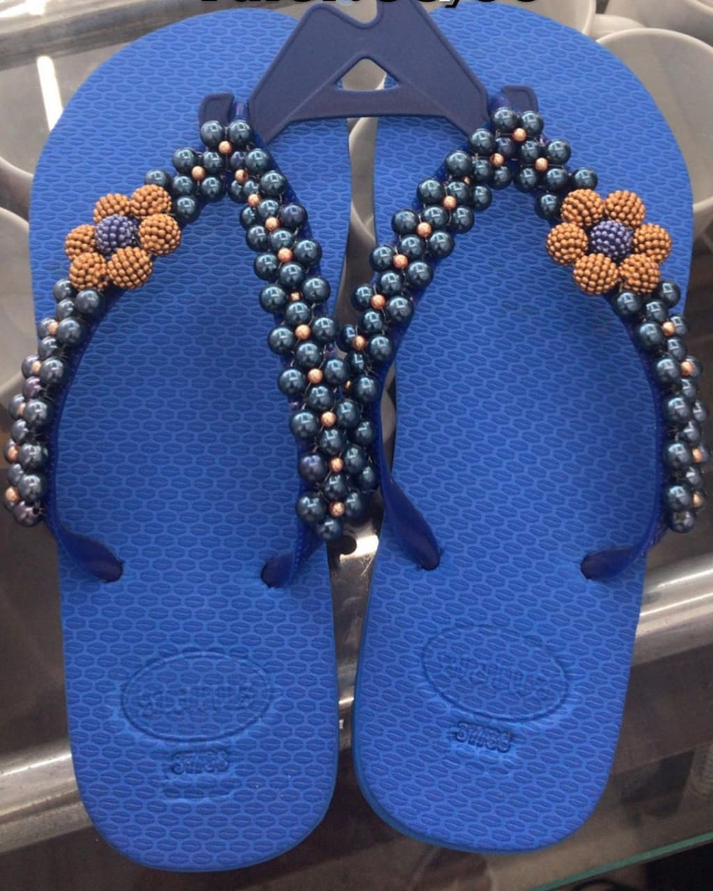

Historia da Status:
A ideia começou em 2020 quando Reinaldo de Castro, fundador da Status, começou o projeto com o interesse em abrir uma loja para vender chinelos e canecas personalizadas para a cidade de Barra Longa. La em Barra Longa (Minas Gerais) foi criada a Status com o intuito de vender chinelos. Porém com o tempo passando e os chinelos sendo vendidos com um certo sucesso la em Barra Longa, Reinaldo decicidiu vender camisas personalizadas e canecas também, vendendo ate em Betim com divulgações e interesses de pedidos feitos localizado na Feira shop Betim, loja H11.
Produtos da Status:
